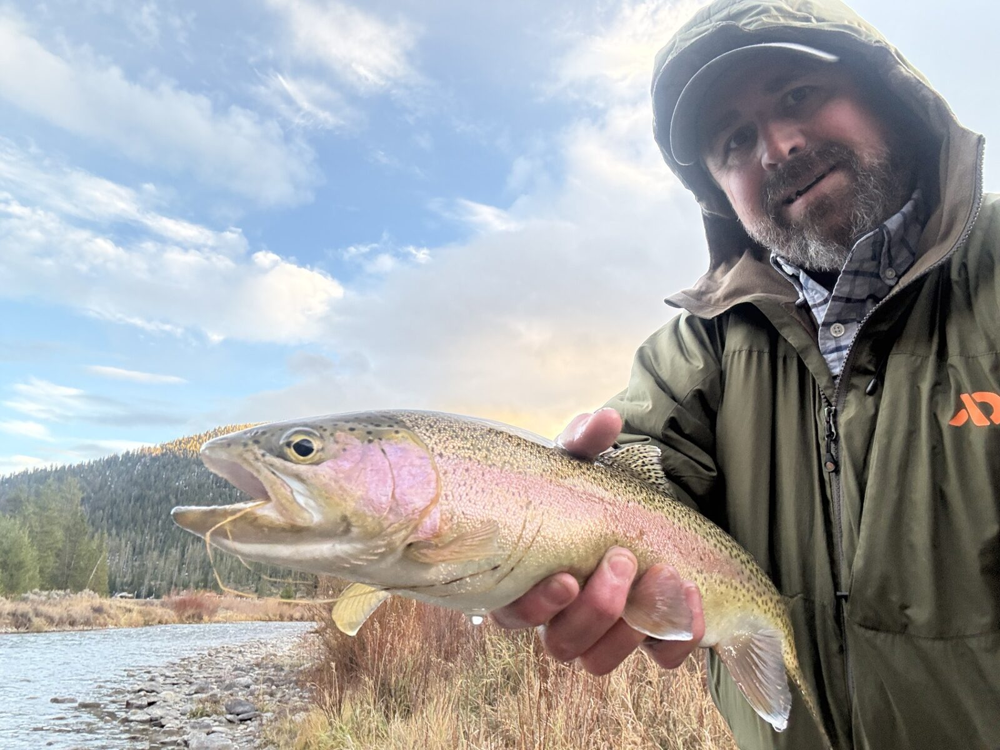
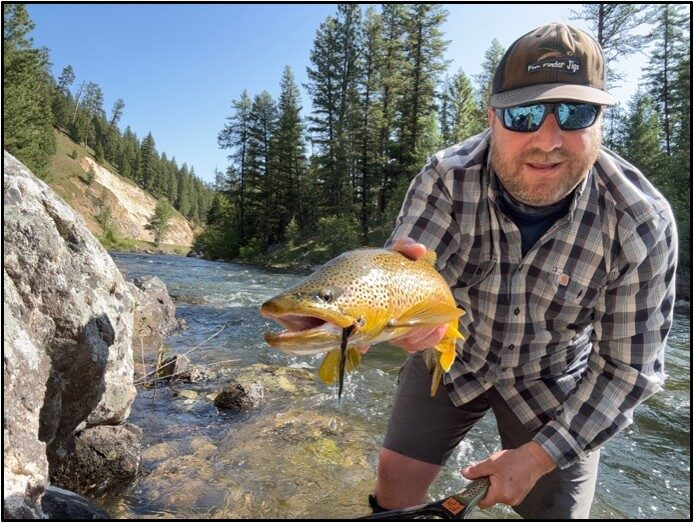

About TWR

Robert Sain
Principal, Stream Restoration Practitioner
Robert Sain founded Troutwater Consulting to bring 25 years of hands-on river restoration experience directly to landowners and project partners. He has a multidisciplinary background in fish habitat biology, hydrology, fluvial geomorphology, and biological systems engineering. He has also been an angler all his life and knows how trout use a river. He uses all of this to design and build restoration projects that are practical and cost-effective and that suit each site.
Robert has done a lot of work in private lands conservation, designing and leading multiple large, multi-year design-build projects in Montana and Wyoming.
Robert gets things done in the riverscape. He works on every project himself, from the first site walk through construction and monitoring.
Master of Science, Biosystems Engineering
Bachelor of Science, Fisheries Science

Scott Turo
Fish Biologist, Restoration Project Manager
Understanding ecological systems and the species they support is critical to restoration, enabling the development and addition of habitats that support the important life stages of the species present. Scott brings this understanding to his work, drawing on years spent surveying streams and fish populations across the Mountain West and decades working with anadromous and resident species in Oregon, Washington, and Alaska.
Whether it's the sediment transport dynamics that shape the stream's pattern and dimensions to create off-channel habitats or the hydraulics that keep those dark pools under the willows clear, Scott will ensure the fish have a voice in the final product. As a project manager specializing in restoration design and implementation, Scott delivers innovative projects that maximize the site's intrinsic potential while preserving a nature-built feel.
Bachelor of Science, Fisheries